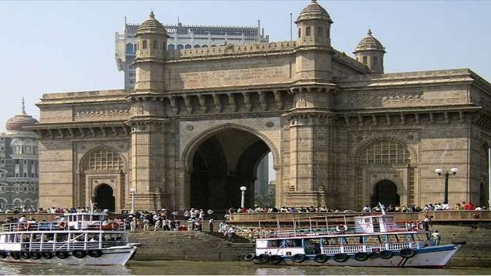
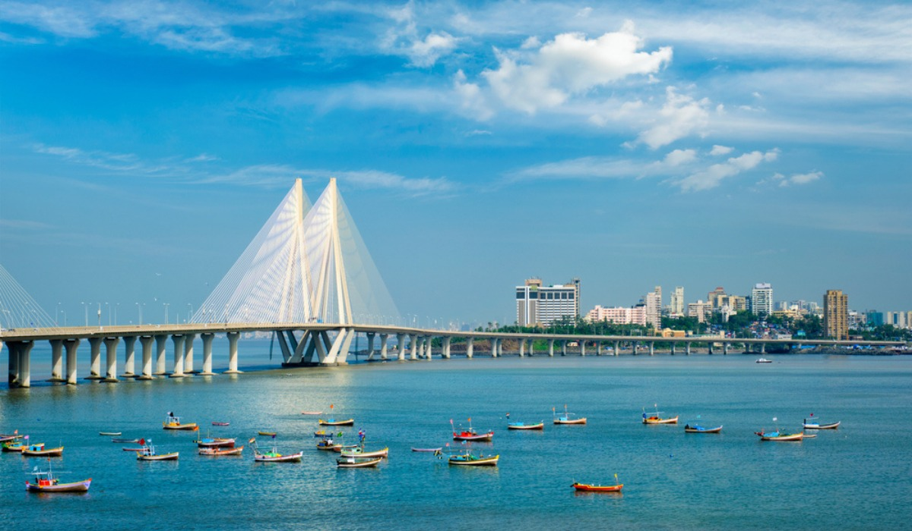
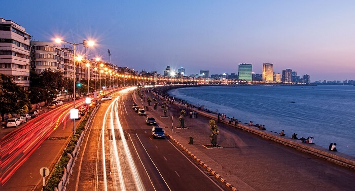

Mumbai (formerly called Bombay) is a densely populated city on India’s west coast. A financial center, it's India's largest city. On the Mumbai Harbour waterfront stands the iconic Gateway of India stone arch, built by the British Raj in 1924. Offshore, nearby Elephanta Islandholds ancient cave temples dedicated to the Hindu god Shiva. The city's also famous as the heart of the Bollywood film industry.

The Kokan region is a coastal area located in the western state of Maharashtra, India. It stretches along the Arabian Sea coastline and covers a total area of approximately 720 kilometers. The region is known for its beautiful beaches, majestic forts, and stunning landscapes. Popular tourist destinations in the Kokan region include places like Alibaug, Ganpatipule, Ratnagiri, and Sindhudurg. The Kokan region has a warm tropical climate throughout the year, with temperatures ranging from 25-35° Celsius. The region experiences monsoon rains from June to September, which can cause flooding and landslides in some areas. Agriculture is the main occupation in the Kokan region, with the cultivation of cashew nuts, mangoes, and coconuts being the main crops. The region is also known for its fishing industry, with many coastal villages engaged in fishing activities. Overall, the Kokan region is a popular destination for tourists seeking beautiful beaches, natural landscapes, and cultural experiences.

Satara is a city located in the state of Maharashtra, India. It is known for its historical and religious significance. Some of the notable attractions in Satara include: 1. Ajinkyatara Fort: A historic fort located on top of a hill that offers a breathtaking view of the city. 2. Thoseghar Waterfalls: One of the most popular waterfalls in Maharashtra and a great place to visit during monsoon season. 3. Kaas Plateau: A UNESCO World Heritage Site and a popular spot for nature lovers and photography enthusiasts. 4. Mahabaleshwar: A picturesque hill station located near Satara that offers stunning panoramic views. 5. Sajjangad: An important pilgrimage site for followers of the Hindu saint Shri Samartha Ramdas. Apart from these attractions, Satara is also known for its production of grapes, strawberries, and other fruits. The city has a rich cultural history and is home to various festivals like the Satara Mahotsav and the Ganesh Festival.


Pune is a metropolitan city located in the western state of Maharashtra in India. It is the second-largest city in the state and the seventh-largest city in the country. The city is commonly known as the "Oxford of the East" due to its prominence as an educational haven.Pune has a rich history that dates back to the 8th Century AD when it was founded by the Rashtrakutas. The city was ruled by several empires in the past, including the Marathas, the British, and the Peshwas.Some of the notable landmarks in Pune include the Shaniwar Wada, Aga Khan Palace, Dagdusheth Ganpati Temple, and the Osho International Meditation Resort. Pune is also the birthplace of the famous warrior king, Chhatrapati Shivaji Maharaj.Apart from its rich cultural heritage, Pune is also a prominent hub of the IT sector. Several multinational companies such as Infosys, Wipro, and Tata Consultancy Services have their offices in the city. Pune is also known for its vibrant nightlife, shopping districts, and food scene.Overall, Pune is a perfect blend of modernity and tradition, making it one of the most sought-after destinations in the country.


Amaravati is a city in Maharashtra, located in the Nagpur division about 150 km from Nagpur. It is situated on the banks of the River Krishna. It is the proposed capital city of Andhra Pradesh. Amaravati is a historic city that was once the capital of the Satavahana dynasty. The city is known for its ancient Buddhist stupa, called Amaravati Stupa, which dates back to the 2nd century BC. The stupa is one of the largest ancient stupas in India. Currently, the city of Amaravati is undergoing significant development as the Andhra Pradesh government has proposed to make it the new capital city of the state. The government has laid out plans for developing Amaravati into a world-class city with modern infrastructure, advanced transportation, and sustainable living. The city is intended to become a hub for innovation, education, and economic development, with plans to establish a smart city that provides an ideal environment for businesses and entrepreneurs. Several multinational companies have already expressed interest in investing and setting up their operations in Amaravati. Once completed, Amaravati is expected to have a population of over 3 million people and will be home to several schools, universities, and research institutions. The government has allocated significant funding for developing residential, commercial, and industrial areas in the city. Overall, the development of Amaravati is considered to be a significant step in the progress of Andhra Pradesh and is expected to play a crucial role in the economic development of the region.